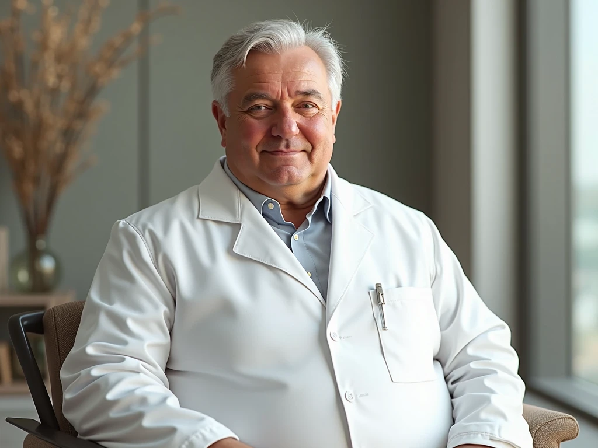

+38(068) 79 72 782
+38(068) 79 72 782Кодування від алкоголізму Київ
«Кодування у Києві – крок до тверезого життя!»


Безкоштовна консультація, працюємо цілодобово 24/7
«Кодування у Києві – крок до тверезого життя!»
Алкогольна залежність — це хронічне та прогресуюче захворювання, яке поступово руйнує всі сфери життя: здоров’я, кар’єру, стосунки з близькими. У такій ситуації людина часто відчуває себе у пастці, не в змозі розірвати порочне коло залежності. Для багатьох людей кодування від алкоголізму в Києві стає надійним рішенням і відправною точкою для початку шляху до одужання. Цей метод, перевірений часом і довівший свою ефективність, надає людині реальний шанс на нове, здорове та вільне життя. Він слугує потужним фізіологічним бар’єром, який допомагає подолати фізичну тягу та сфокусуватися на психологічній роботі над собою.
Кодування від алкоголізму — це комплексний метод лікування, що включає психологічний та медикаментозний вплив. Його головна мета — сформувати у людини стійке неприйняття до спиртного та допомогти їй повернутися до тверезого життя. Цей метод не просто знімає симптоми, а впливає на глибокі причини залежності.
Таким чином, кодування допомагає людині не лише подолати фізичну тягу, але й отримати час для психологічної адаптації до нового, тверезого життя.
Якщо ви прийняли рішення закодуватися від алкоголю в Києві, вкрай важливо обрати надійну та перевірену медичну службу. Самолікування або звернення до сумнівних спеціалістів може не лише виявитися неефективним, а й завдати серйозної шкоди здоров’ю. Тільки досвідчений лікар-нарколог може провести процедуру безпечно та ефективно. Звернувшись до UmbrellaPlus, ви отримаєте професійне кодування, яке гарантує:
Кодування від алкоголізму в UmbrellaPlus — це надійний спосіб отримати кваліфіковану допомогу та розпочати шлях до тверезості під наглядом досвідчених спеціалістів.
Найбільш популярним і ефективним методом медикаментозного кодування є кодування від алкоголізму уколом. Ця процедура займає всього кілька хвилин, але її ефект може тривати від кількох місяців до кількох років, створюючи в організмі надійний і потужний захист від вживання спиртного.
Ефективність цього методу ґрунтується на швидкій і прямій дії препарату. Лікар вводить медикамент внутрішньовенно або внутрішньом’язово, що забезпечує його миттєве засвоєння та початок дії. Препарат створює в організмі фізіологічний бар’єр, роблячи вживання алкоголю неможливим і небезпечним. Завдяки цьому людина повністю захищена від спокуси випити, а сам факт наявності «захисту» допомагає їй зміцнити власне рішення. Тривалість дії кодування підбирається індивідуально, що дозволяє пацієнту отримати саме ту підтримку, яка йому потрібна для початку шляху до одужання.
Вартість кодування від алкоголізму в Києві починається від 6000 грн.
| Популярні Послуги | Вартість |
|---|---|
| Виведення із запою вдома | Від 2700 грн |
| Крапельниця від алкоголю | Від 2700 грн |
| Крапельниця від наркотиків | Від 3000 грн |
| Кодування від алкоголізму укол Дисульфірам | Від 6000 грн |
Багато пацієнтів, які шукають вихід із залежності, запитують про «найсильніше» кодування від алкоголізму. Насправді сила та надійність кодування полягають не у дозуванні, а в його комплексності. Найбільш надійний і довготривалий ефект досягається тоді, коли медикаментозний вплив поєднується з професійною психологічною підтримкою.
Медикаментозний бар’єр — це потужний інструмент, який дає вам найцінніше: час. Усуваючи фізичну тягу до алкоголю, він надає можливість сфокусуватися на головному завданні — роботі над собою. Саме в цей період тверезості починається справжня боротьба із залежністю, яка ведеться на психологічному рівні.
Таким чином, медикаментозне кодування слугує надійним фундаментом, а робота з психологом і групова терапія допомагають побудувати на цьому фундаменті нове, здорове та повноцінне життя. Саме такий підхід забезпечує найбільш надійний і тривалий результат, роблячи кодування по-справжньому «сильним».
Ні, закодувати п’яну людину категорично не можна. Це не лише неефективно, але й вкрай небезпечно для її життя та здоров’я. Препарати, що використовуються для кодування, вступають у потужну взаємодію з алкоголем, який ще знаходиться в організмі, викликаючи негайну і дуже тяжку реакцію відторгнення.
Цей стан може призвести до критичних наслідків: різкого стрибка артеріального тиску, сильної блювоти, судом і навіть повного колапсу серцево-судинної системи. Спроба провести процедуру в стані сп’яніння — це прямий шлях до серйозних ускладнень, які можуть коштувати життя.
Крім того, найважливішою умовою для кодування є усвідомлена згода пацієнта на лікування. Людина, що перебуває під впливом алкоголю, не здатна приймати виважені рішення та розуміти всі ризики. Тому будь-який професійний нарколог спочатку переконається у повній тверезості пацієнта та його щирому бажанні пройти процедуру, перш ніж розпочати лікування. Відмова закодувати п’яного — це не відмова у допомозі, а прояв найвищого професіоналізму та турботи про його безпеку.
Для безпечного та ефективного проведення процедури кодування вкрай важливо дотримуватися всіх рекомендацій лікаря. Основна та обов’язкова умова, яка гарантує, що в крові не залишилося спиртного, — це утримання від вживання алкоголю мінімум 3–5 днів.
Це не просто рекомендація, а критично важливий етап підготовки. Якщо в організмі залишаться навіть сліди алкоголю, введений препарат може викликати сильну негативну реакцію, що призведе до тяжких наслідків для здоров’я. Суворе дотримання цього правила гарантує, що препарат почне працювати коректно, забезпечить безпеку процедури та максимальну ефективність лікування.
При медикаментозному кодуванні використовується препарат на основі Дисульфіраму, який створює в організмі потужний фізіологічний бар’єр. Якщо пацієнт вип’є спиртне, препарат викликає сильну інтоксикацію, що проявляється негайною і дуже тяжкою реакцією. Людина відчуває сильну нудоту й блювоту, запаморочення, прискорене серцебиття, стрибки тиску та сильне відчуття страху. Ця болісна й небезпечна для здоров’я реакція формує стійкий умовний рефлекс: вживання алкоголю починає асоціюватися не із задоволенням, а з муками та лякаючими наслідками. Такий механізм надійно запобігає зривам, надаючи людині можливість зосередитися на відновленні здоров’я та почати нове, тверезе життя.
Кодування від алкоголізму — це абсолютно безпечна процедура, але тільки за умови, що вона проводиться кваліфікованим лікарем-наркологом. Небезпека виникає лише при спробах самолікування або зверненні до неспеціалістів, які можуть використовувати неякісні препарати або не дотримуватися медичних протоколів. Перед процедурою лікар обов’язково проводить ретельний огляд, щоб виключити будь-які протипоказання (наприклад, захворювання серця, печінки чи нирок) і переконатися, що пацієнт готовий до лікування. Це дозволяє мінімізувати ризики та гарантувати, що процедура пройде безпечно й ефективно.
Термін дії кодування від алкоголізму не є фіксованим. Він індивідуальний і залежить від багатьох факторів: дозування препарату, обраного методу кодування, а також від рішення, яке лікар приймає разом із пацієнтом. Ефект може тривати від 6 місяців до 5 років.
Такий тривалий строк дає людині можливість повністю відновити фізичне здоров’я і психологічну рівновагу. За цей час можна виробити нові, тверезі звички, відновити соціальні зв’язки та знайти нові життєві цілі. Після завершення строку дії кодування процедуру можна повторити, якщо це необхідно для підтримання тверезості.
Кодування від алкоголізму уколом у Києві — це перевірений і надійний метод, який дає людині необхідний фізіологічний бар’єр для боротьби із залежністю. Це не чарівна пігулка, а ефективний інструмент, який дає вам час, щоб переглянути своє життя та почати будувати його заново, без алкоголю.
Якщо ви або ваші близькі готові зробити перший крок до тверезості, не відкладайте. Зверніться до спеціалістів, щоб отримати безпечну й професійну допомогу, яка поверне вам контроль над власним життям. У нашій медичній службі UmbrellaPlus ми гарантуємо повну анонімність та індивідуальний підхід. Наші лікарі працюють цілодобово, щоб бути поруч, коли вам це потрібно.
Зателефонуйте нам за номером 050-021-69-57 і зробіть перший, найважливіший крок до одужання.
Александр

Решила сделать укол от алкоголизма по рекомендации подруги, которая проходила эту процедуру в этом же центре. Я сомневалась, но врачи всё объяснили, успокоили. После укола не чувствую тяги к алкоголю, хотя раньше сложно было представить день без выпивки. Сейчас наслаждаюсь трезвостью, чувствую себя намного лучше.
Анонимно
Дуже довго не міг самостійно позбавитися залежності, тому зважився на підшивку. Процедура пройшла успішно, і з того часу я навіть не думаю про спиртне. Страх перед можливими наслідками допомагає триматися на плаву, а підтримка фахівців – величезна підмога у цьому нелегкому шляху. Центр надає як фізичну, а й моральну допомогу. Вдячний їм за другий шанс.
Анонимно
Я никогда не думал, что психологическое воздействие может настолько сильно повлиять на мою жизнь. Врач помог осознать всю серьезность ситуации, и теперь алкоголь не вызывает у меня никакого интереса. Процедура безопасна и эффективна, рекомендую тем, кто хочет по-настоящему изменить свою жизнь.
Анонимно
Я прошла кодирование гипнозом, и это было удивительное переживание. Во время сеанса я почувствовала глубокое расслабление, а потом – будто внутри что-то изменилось. Сейчас я свободна от алкоголя и наслаждаюсь этим состоянием. Благодарю центр за профессионализм и заботу! Отдельная благодарность Станиславу Вячеславовичу
Анонимно
Чесно кажучи, боявся рецидиву, але з процедури минуло півроку, і я навіть не думаю про випивку. Життя почало змінюватися на краще. Дякуємо лікарям за підтримку та мотивацію!
Анонимно
Після багаторічної боротьби із залежністю вирішила звернутись в клінку. Спочатку переживала, але лікарі дуже докладно розповіли про процес та можливі наслідки. Зараз я не п’ю вже 8 місяців і почуваюся чудово. Я така щаслива, що знайшла цей центр і знайшла контроль над своїм життям.
Анонимно
Метод Долженко казался мне странным, но я решил попробовать. Оказалось, что это не просто кодировка, а глубокая работа с психикой. Это позволило мне кардинально изменить отношение к алкоголю. Уже год я не пью, и не планирую возвращаться к прежней жизни. Простое человеческое спасибо!
Анонимно
Гипноз помог мне избавиться от постоянной тяги к алкоголю. После сеансов я заметила, что стала спокойнее и увереннее в себе. Теперь алкоголь меня больше не интересует. Центр мне очень помог, и я благодарна за их заботу и поддержку.
Номер телефону:
+380 (68) 797 27 82
+380 (50) 021 69 57
Адресу наркологічного центра вашого міста
уточнюйте за телефоном
Працюємо: Київ, Одеса, Львів, Харків, Дніпро,
Запоріжжя
Telegram: t.me/umbrellaplus
Графік работы: Цілодобово